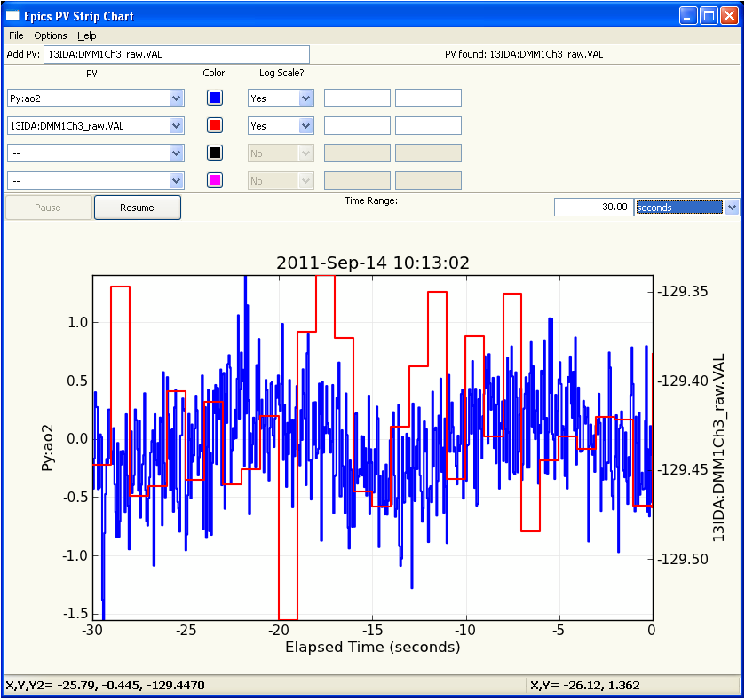
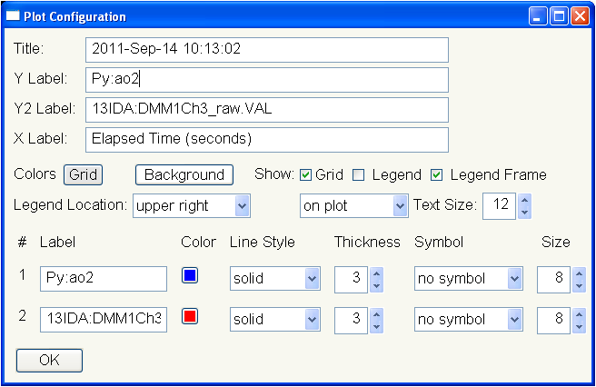

StripChart is a wxPython GUI application for viewing time traces of PVs as a strip chart. This is inspired by the classic Epics Stripchart application written with X/Motif.
This application needs pyepics, numpy, matplotlib, and wxPython.
It also the wxmplot plotting library, which can be found at http://pypi.python.org/pypi/wxmplot/, with development versions at http://github.com/newville/wxmplot/ and may be installed wth:
easy_install -U wxmplot
Installation of the striphart can be done with:
python setup.py install
To run this application, simply run stripchart.py at the command line:
python pyepics_stripchart.py
and enter the base name of the PVs to follow. A sample display would look like this:
Plot details such as line colors, thicknesses, labels, etc can be adjusted from the configuration screen, available from the Menu.
